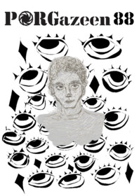
Porgazeen 88
červen 2025
červen 2025
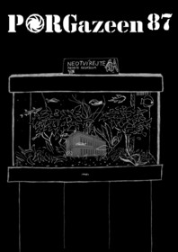
Porgazeen 87
prosinec 2024
prosinec 2024
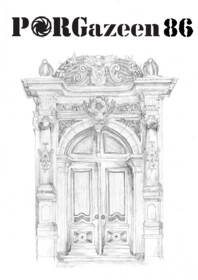
Porgazeen 86
červen 2024
červen 2024
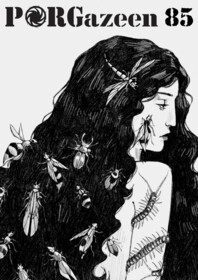
Porgazeen 85
květen 2024
květen 2024
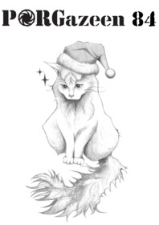
Porgazeen 84
prosinec 2023
prosinec 2023
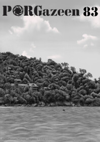
Porgazeen 83
červen 2023
červen 2023
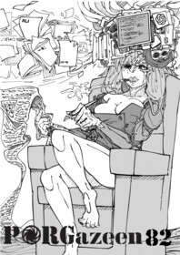
Porgazeen 82
duben 2023
duben 2023
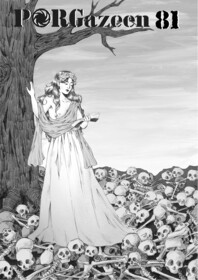
Porgazeen 81
prosinec 2022
prosinec 2022
 Porgazeen 80
Porgazeen 80 červen 2022
 Porgazeen 79
Porgazeen 79 duben 2022
 Porgazeen 78
Porgazeen 78 prosinec 2021
 Porgazeen 77
Porgazeen 77 červen 2021
 Porgazeen 76
Porgazeen 76 únor 2021
 Porgazeen 75
Porgazeen 75 září 2020
 Koronapzeen
Koronapzeen květen 2020
 Porgazeen 74
Porgazeen 74 prosinec 2019
 Porgazeen 73
Porgazeen 73 červen 2019
 Porgazeen 72
Porgazeen 72 květen 2019
 Porgazeen 71
Porgazeen 71 prosinec 2018
 Porgazeen 70
Porgazeen 70 červen 2018
 Porgazeen 69
Porgazeen 69 duben 2018
 Porgazeen 68
Porgazeen 68 prosinec 2017
 Porgazeen 67
Porgazeen 67 červen 2017
 Porgazeen 66
Porgazeen 66 prosinec 2016
 Porgazeen 65
Porgazeen 65 červen 2016
 Porgazeen 64
Porgazeen 64 březen 2016
 Porgazeen 63
Porgazeen 63 prosinec 2015
 Porgazeen 62
Porgazeen 62 červen 2015
 Porgazeen 61
Porgazeen 61 duben 2015
 Porgazeen 60
Porgazeen 60 prosinec 2014
 Porgazeen 59
Porgazeen 59 červen 2014
 Porgazeen 58
Porgazeen 58 březen 2014
 Porgazeen 57
Porgazeen 57 prosinec 2013
 Porgazeen 56
Porgazeen 56 červen 2012
 Porgazeen 55
Porgazeen 55 prosinec 2011
 Porgazeen 54
Porgazeen 54 červen 2011
 Porgazeen 53.5
Porgazeen 53.5 prosinec 2010
 Porgazeen 53
Porgazeen 53 prosinec 2010
 Porgazeen 52
Porgazeen 52 červen 2010
 Porgazeen 51
Porgazeen 51 prosinec 2009
 Porgazeen 50
Porgazeen 50 červen 2009
 Porgazeen 49
Porgazeen 49 prosinec 2008
 Porgazeen 48
Porgazeen 48 červen 2008
 Porgazeen 47
Porgazeen 47 březen 2008
 Porgazeen 46
Porgazeen 46 prosinec 2007
 Porgazeen 45
Porgazeen 45 červen 2007
 Porgazeen 44
Porgazeen 44 duben 2007
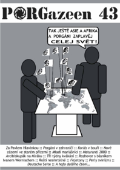
Porgazeen 43
prosinec 2006
prosinec 2006
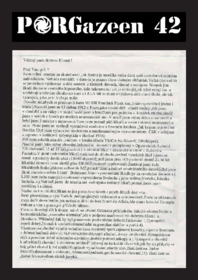
Porgazeen 42
květen 2006
květen 2006
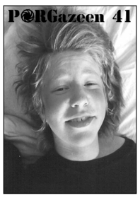
Porgazeen 41
prosinec 2005
prosinec 2005
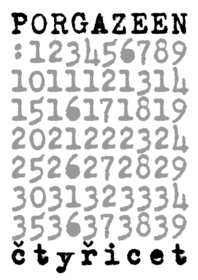
Porgazeen 40
červen 2004
červen 2004
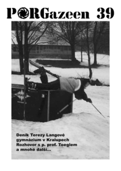
Porgazeen 39
březen 2004
březen 2004
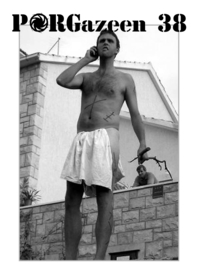
Porgazeen 38
říjen 2003
říjen 2003
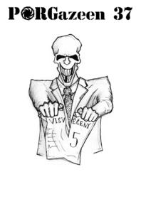
Porgazeen 37
červen 2003
červen 2003
Porgazeen 36
duben 2003
duben 2003
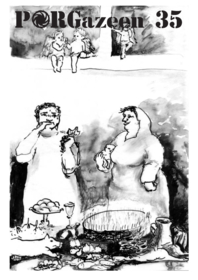
Porgazeen 35
prosinec 2002
prosinec 2002
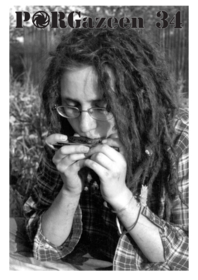
Porgazeen 34
říjen 2002
říjen 2002
Porgazeen 33
červen 2002
červen 2002
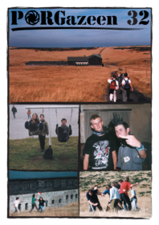
Porgazeen 32
leden 2002
leden 2002
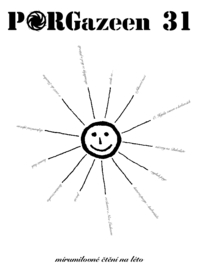
Porgazeen 31
červen 2001
červen 2001
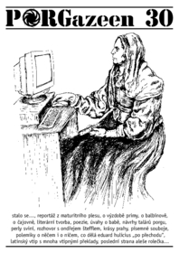
Porgazeen 30
březen 2001
březen 2001
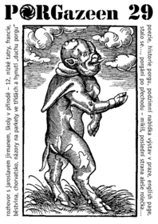
Porgazeen 29
prosinec 2000
prosinec 2000
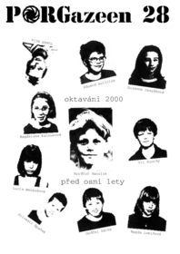
Porgazeen 28
červen 2000
červen 2000
 Porgazeen 27
Porgazeen 27 duben 2000
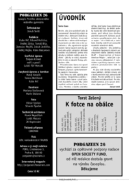
Porgazeen 26
prosinec 1999
prosinec 1999
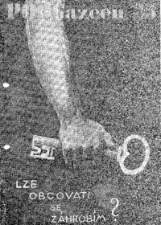
Porgazeen 25
říjen 1999
říjen 1999
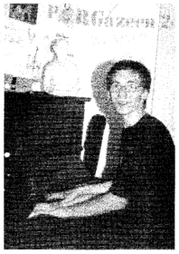
Porgazeen 24
září 1999
září 1999
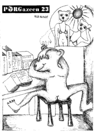
Porgazeen 23
duben 1999
duben 1999
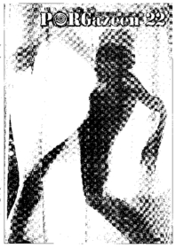
Porgazeen 22
únor 1999
únor 1999
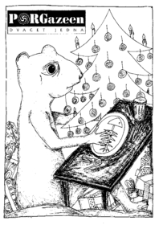
Porgazeen 21
prosinec 1998
prosinec 1998
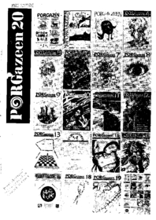
Porgazeen 20
říjen 1998
říjen 1998
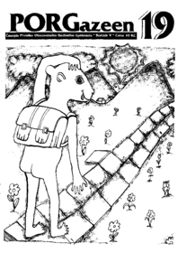
Porgazeen 19
červen 1998
červen 1998
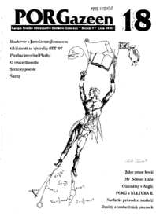
Porgazeen 18
květen 1998
květen 1998
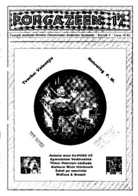
Porgazeen 17
duben 1998
duben 1998
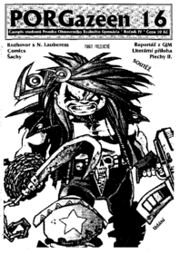
Porgazeen 16
prosinec 1997
prosinec 1997
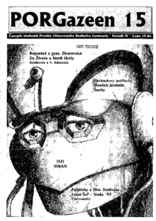
Porgazeen 15
říjen 1997
říjen 1997
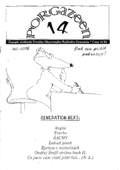
Porgazeen 14
červen 1997
červen 1997
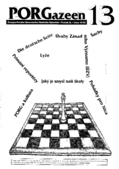
Porgazeen 13
březen 1997
březen 1997
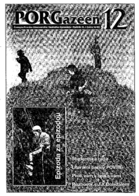
Porgazeen 12
leden 1997
leden 1997
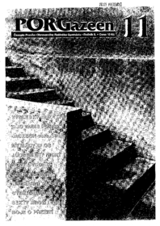
Porgazeen 11
říjen 1996
říjen 1996
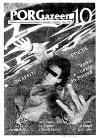
Porgazeen 10
červen 1996
červen 1996
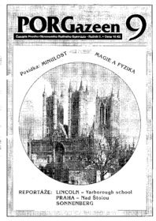
Porgazeen 9
duben 1996
duben 1996
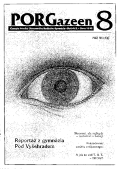
Porgazeen 8
únor 1996
únor 1996
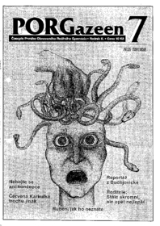
Porgazeen 7
prosinec 1995
prosinec 1995
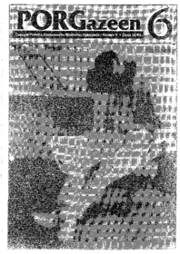
Porgazeen 6
říjen 1995
říjen 1995
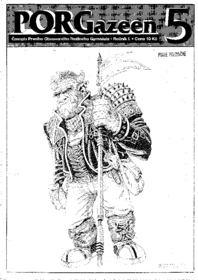
Porgazeen 5
květen 1995
květen 1995
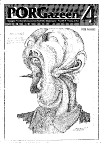
Porgazeen 4
duben 1995
duben 1995
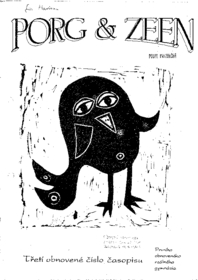
Porgazeen 3
únor 1995
únor 1995
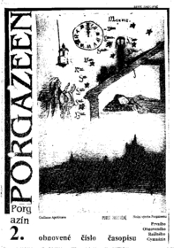
Porgazeen 2
leden 1995
leden 1995
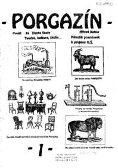
Porgazeen 1
listopad 1994
listopad 1994